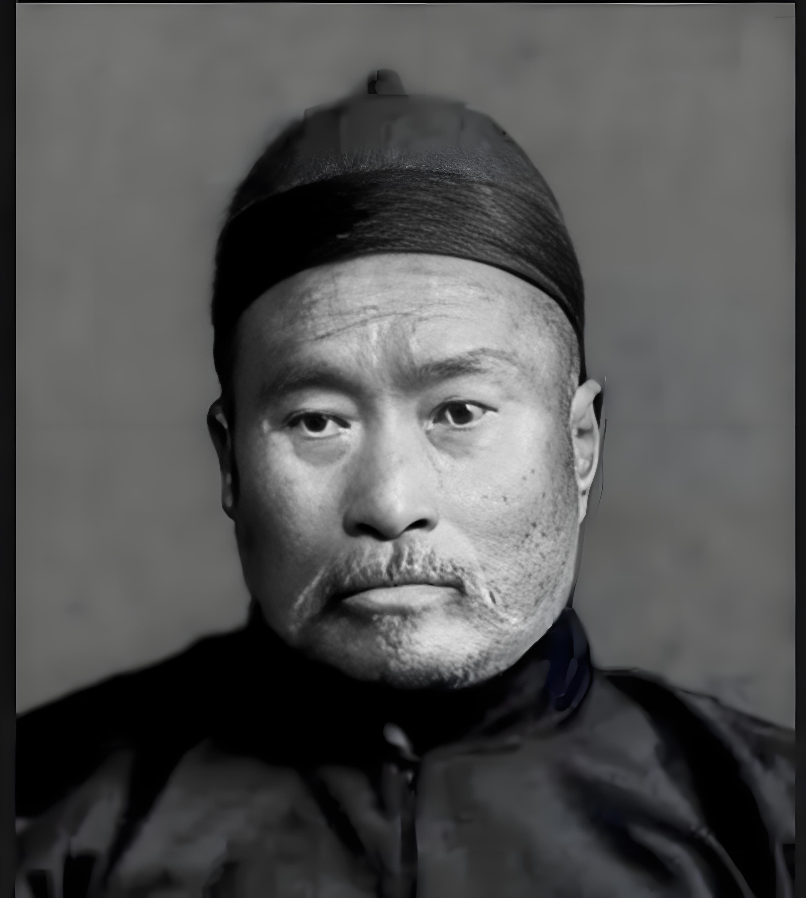
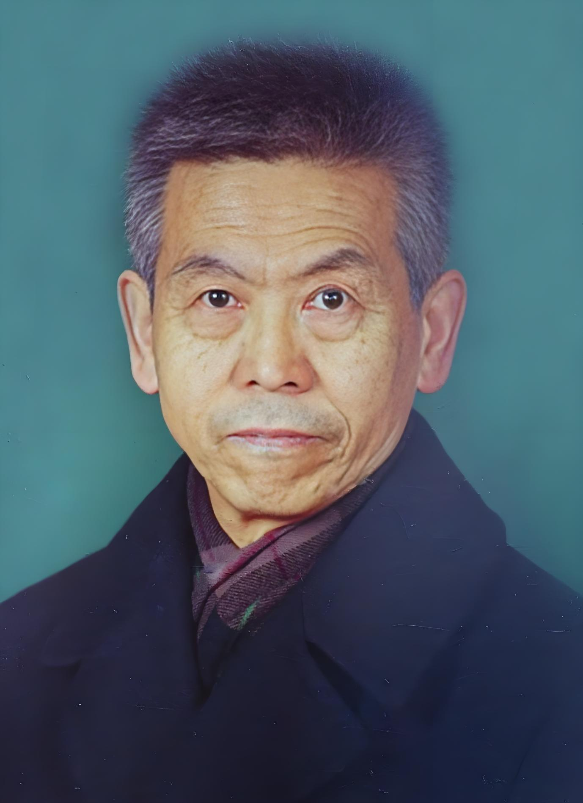
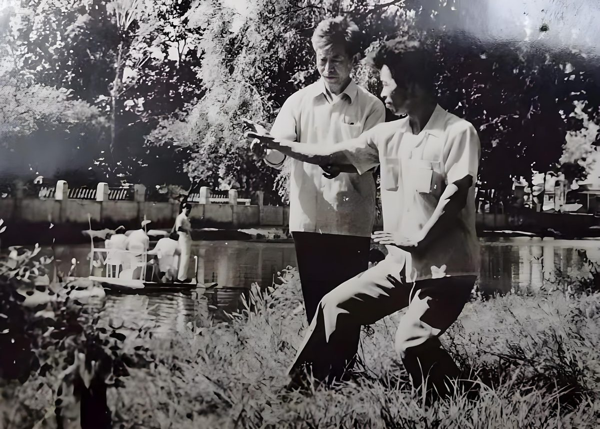
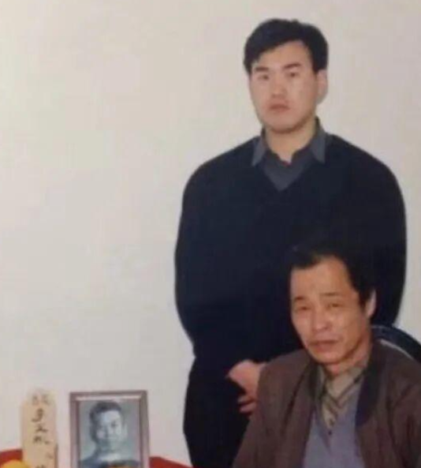
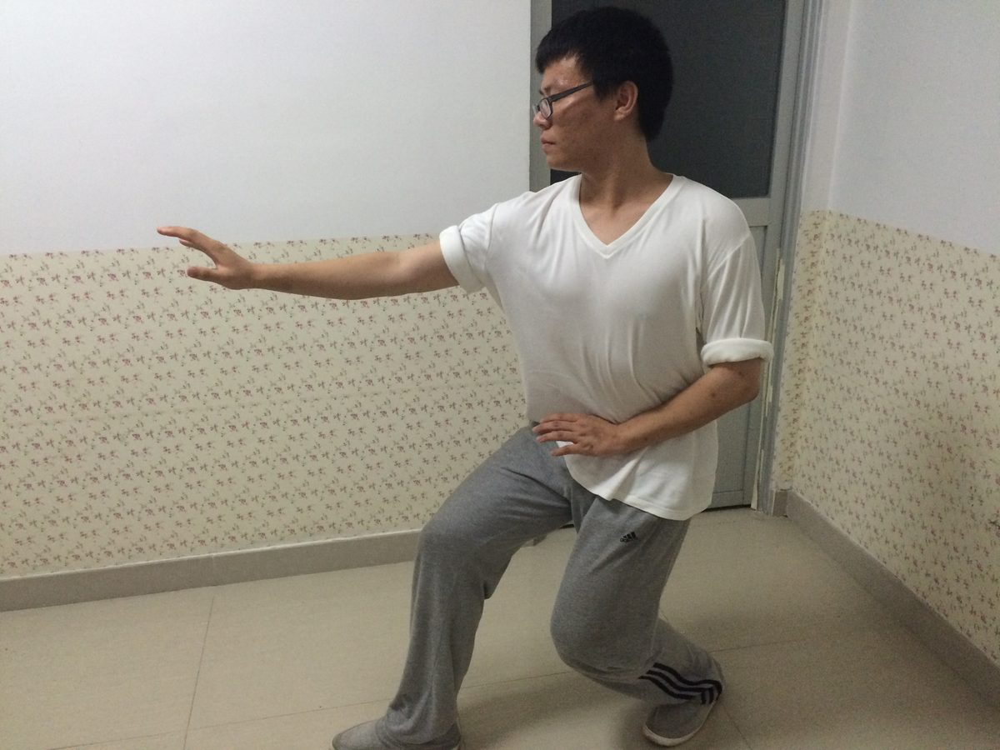
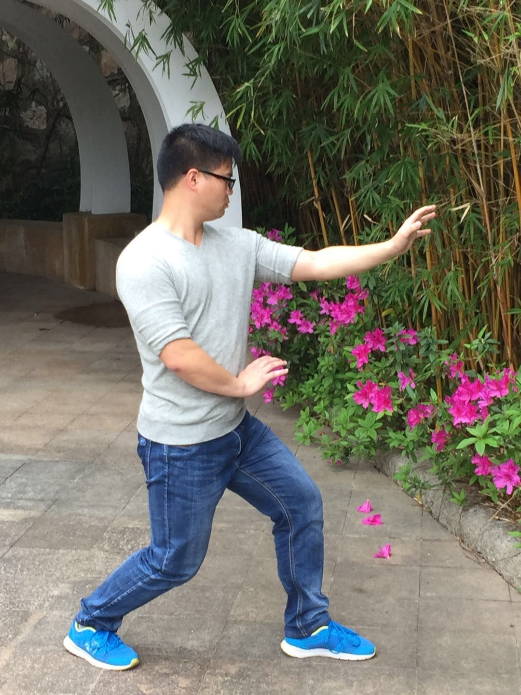

师承关系

尚云祥 先生
形意拳大师 | 清末民初著名武术家
尚云祥（1864-1937），字霁亭，山东乐陵人，形意拳大家，是形意拳发展史上的重要人物。他师从李存义，得到郭云深的真传，以半步崩拳闻名天下，有"半步崩拳打遍天下"的美誉。尚云祥的拳法风格独特，注重实战，强调"形意合一"，对形意拳的发展和传承做出了巨大贡献。

李文彬 先生
尚云祥嫡传弟子 | 形意拳名家
李文彬（1918-1997）是尚云祥的得意门生，深得形意拳精髓。他继承了尚云祥的拳法风格，注重基础训练和实战应用。李文彬在传承形意拳的过程中，不仅注重技艺的传授，更强调武德的培养，为形意拳的传承做出了重要贡献。

吕太敏 先生
李文彬得意门生 | 形意拳传承人
吕太敏是李文彬的得意门生，系统学习了形意拳的各种技法。他不仅拳法精湛，而且对形意拳的理论有深入研究。吕太敏在教学过程中注重因材施教，培养了许多优秀的弟子，为形意拳的传承和发展做出了重要贡献。

张午生 先生
吕太敏入室弟子 | 形意拳传承人 | 鹰手拳传人
张午生，1973年出生，自幼喜好武功，少年时即师承中国著名武术家、形意拳大师、国家一级武术裁判吕太敏先生，勤学苦练20余载，完整、系统、扎实习得形意拳精髓，成为尚氏形意拳第三代传人。后经吕太敏先生推荐，师从中国著名武术家、鹰手拳第二代传人孙东昌先生学习鹰手拳，冬练三九夏练三伏，深得孙东昌老师真传。擅长形意拳、鹰手拳、易筋经。
弟子风采
李一帆

邓盛文

常宗坤
周驰

刘轶恺

李太平
邹智鑫
张林
教学理念
注重基础
强调站桩、基本拳法等基础训练的重要性，认为扎实的基础是提高技艺的关键。
内外兼修
不仅注重外在的动作规范，更强调内在的气息调理和精神修养。
因材施教
根据学员的体质、年龄和学习能力，制定个性化的教学计划。